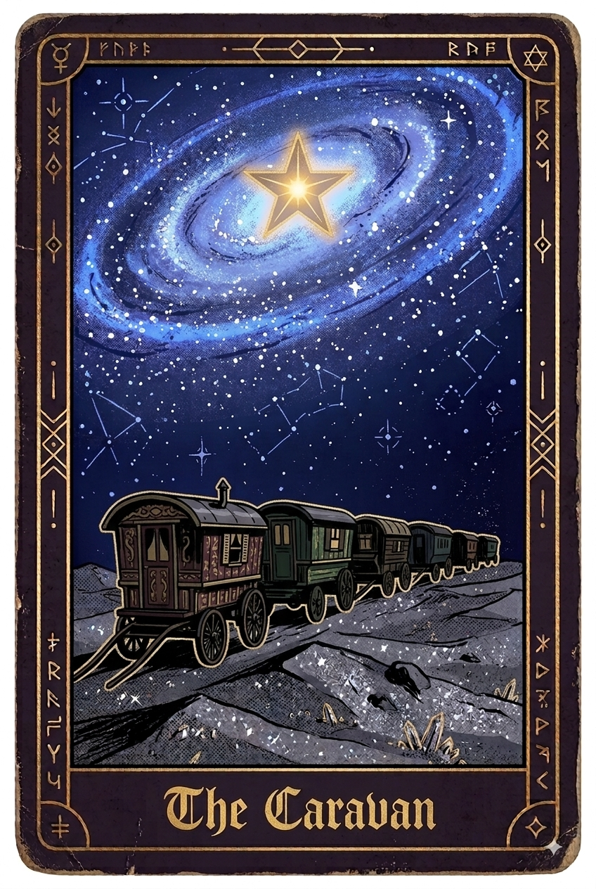

Void - I - The Caravan Three shadows wandered the silver desert. None of them remembered where they had come from. They were similar in appearance, faceless, featureless and smokey, their clothes and skin entirely blended in pitch black. They looked like silhouettes of forgotten people. They had trudged step by step through the sand, with no destination to head to and no home to return to. There seemed to be no start and no end. The alternative was standing still, but the occasional distant howls had them constantly moving, not wanting to learn what made them. Although they had no direction to go on, the tallest of the three led them. He didn't know where to, he had just felt a pull, a sense that a location was calling him. One of the smaller shadows took a tumble in the sand, to which the second smallest shadow attempted to help them up but unfortunately went down with them. The tallest managed to pull up the other two to their feet. The smaller shadows looked to the tallest, their faces looking as though they wanted to cry. The lack of home and memory had become a silent sadness that ate at them. Then in that small moment of frustration it came to a boil. "Come on now, let's not lose hope" he said. The other two then steeled themselves, resisting the urge to concede to despair. All they had in this unknown world was each other. Although he didn't know who they were or even who he was, he had taken it upon himself to get them to a safe place. He wondered why he felt this way, but he had no real answers, just a natural sense that was the right thing to do, what he should be doing. "Look, there" one of them said whilst pointing out into the distance. The group could see something on the horizon, something heading their way. Twinkling dark silver sand whipped up and over the dunes, half concealing a caravan, nearly twenty long. Creatures of all shapes and sizes, quadrupedal and polypoid alike calmly carried people and pulled large baroque cargo carts and living wagons. Many-armed escorting guards trotted on the backs of large humped creatures whilst clutching their spears, maintaining a protective perimeter. The whistling sand threatened to pierce their tightly wrapped masks with sullen expressions. The creatures occasionally grunted and snorted as golden barding jingled with every heavy step. The humped beasts of the guards were decorated with less precious metals, but still carried the same level of ornate detailing as the larger caravan beasts. The appearance of these traveling folk was in stark contrast to them. They were full of colour and features, tattoos, jewellery, hair and skin, each a unique character onto themselves. The three shadows had never seen anything like this spectacle before, or at least they hadn't in this land. The tall one felt something, images spiraled into his mind's eye. There was familiarity there. He had seen something like this before, just not in this life. "Travelers" he found himself saying out loud. Finery and craftsmanship ran throughout the entire convoy, creating quite the spectacle on a landscape which was more often just a sea of grey shining sand. The carts and wagons were made from a mixture of finely carved wood painted in deep purples and reds, edged with worn gold. Each and every cart was decorated with intricately carved symbols which seemed to allude to their purposes, such as food, fabrics, wine and gold. The tall one wondered if there was any chance they could find shelter among them, at least for the other two, not for himself though. Although he was grateful for seeing even just a semblance of civilization and sentience after all their journeying, he still felt like there was something else out there in the desert for him. Most of the travellers took refuge within their wooden walls and stretched sheets, but some nonchalantly hung off cart edges, whilst others more eccentrically sat perched upon roof seating. All of them had similar masks to that of the guards, but the travellers masks were more expressive, some exuberant and others grimacing and crying. The caravan eventually began to pass the three little shadows. They stood still, with the tallest holding the other two close, unsure of whether these newcomers were a threat or not. Their masks were perhaps about the only thing they shared in common, as their number of limbs, skin colour and clothing all completely varied. Although most of them were humanoid in shape, very few of them would have been confused with a human; some bore claws, scales, tails, some a mixture of insectoid and humanoid, the only thing consistent about them was their inconsistency. One of them wore a dark golden mask with the face that was somewhere between laughing and crying, on two large greyish blue arms he leaned back as two more bird-like limbs shielded a match as it lit a long pipe. Inserting the thin mouthpiece he took a long drag and blew a coiling stream of purple smoke that followed the path of the blowing sands. He regarded the three little shadows, tilting his head as his cart slowly passed them. “Poor little souls” they heard him say. Instinctively he pulled the other two closer to him, as peering eyes took them in, masks obscuring any true intentions. They felt like they themselves had become the spectacle. The air was neither cold nor warm, temperature was entirely absent, some of the travellers covered themselves in a multitude of layers whilst others went virtually nude, neither were dressed inappropriately for this land. There was no sun there, only night. The tall shadow couldn't remember whether that fact disturbed him, or whether he had simply forgotten what a sun looked like, regardless without one the land was still lit by the sky. Luminous galaxies and ancient cosmic dust hardly left a patch in the vast sky without light, their hues bleeding colour into the silver dunes below. The shadows could hear activity from within the wagons, talking, clinking, laughing. They imagined the denizens inside, merchants counting their coins, quartermasters reviewing their ledgers, cooks checking their spices, storytellers practicing their telling, jesters rehearsing their acts; all of them had a role. Eventually, the caravan finally seemed to take full notice of the three frail figures. A silent signal was given from within the most ornate wagon and it was acted upon immediately, the caravan came to a slow halt beside the figures. That ornate wagon stationed itself parallel to the small group of three. It was barrel shaped with hundreds of trinkets hanging from every possible nook and cranny, all of them jangling like wind chimes. There were no windows, instead the outside was painted and decorated to an unthinkable level of detail, star patterns, symbols and full miniature murals which talked of both distant and ancient places covered every possible space. The tall shadow found himself staring at jewels set into the wagon's frame. He couldn't remember ever seeing a gemstone before, yet somehow he knew they were valuable. The three shadowy figures huddled together looking as if they didn't know whether to stay or run. Eventually a series of metal clicks were heard as a set of stairs unfurled itself from the doorway on the back. "Come," said a voice—deep, smoky, and feminine. The shadows looked at each other, the two smaller ones looking to the tall one for direction. After a moment of hesitation the tall shadow nodded and they wordlessly agreed to enter the wagon. As they stepped across the threshold, the world expanded. The interior defied geometry, opening into a grand chamber far larger than the wagon's outer frame. Scores of sweet smelling candles cast a heavy, golden glow across the opulence, their light catching on glittering relics. Thick incense pooled across the floor like a violet fog, swallowing any corner the candlelight couldn't reach. Charms, trinkets, small cages and dream catchers completely covered the ceiling, they gently twisted and turned, scattering light as they did. Smoke pooled around a large table, the group then noticed the giant throne-like chair on the opposite side from which they were being watched. Steeped in shadow, the candles only picked out edges of a large figure seated across the table, mostly their hands shuffling cards and their glowing eyes. "Come little ones, you're lost, take a seat, and perhaps you can find yourselves" she said, beckoning to sit at the table. They could see her outline and a shimmer of a golden mask, the expression seemed entirely passive and devoid of emotion. As she moved they could hear many necklaces, piercings and clothing jewellery all twinkling. When she finally leant forward they could see she wore a vast dress of dark purple and shifting colours, with a large golden headdress draped in dusty purple fabrics which crudely mimicked hair. She stretched out her hands and the deck of cards seemed to rifle shuffle themselves, before she brought it to a sudden halt and drew a card with two ringed fingers. She revealed the card to show a blind traveller under a moon. "You've walked so long you've forgotten what your feet were seeking". She then revealed a card showing a crossroads. "This is you now, at a pivotal point, and I offer you a choice…" She then pulled two cards into either hand and held them up with their backs turned. She then turned the card in her left hand to reveal a smiling moon over a caravan in a silver desert. "I can offer you a place of belonging, comfort and protection, you can stay with us, be like us..." she lingered on this. Two of the shadows looked to each other and excitedly nodded. "Yes, yes please" one of them managed. The card reader placed the card down in front of the two. The two smaller shadows looked to the tallest with confusion and longing. He imagined years passing beneath the silver sky, familiar faces, shared meals, laughter around distant campfires. They could have a place, a home. The tallest one felt happy for them. Yet something in him still ached. One of them reached out to him and held his hand, he squeezed it in return, but he knew he couldn't accept that choice. The reader then turned to the tallest. "But you don't want this, you're after something, do you even know what it is I wonder..". The shadow didn't say anything, just looked up expectedly. At that moment he thought he could feel something, a slight pull, as though an invisible hand tugged on his back. She then turned the card to reveal a figure pushing a boulder up a hill. "The arduous path I offer has no shelter. But if you choose to follow it, you may find answers" she said before placing the card down in front of him. He then took the card, huge in both his hands, and studied it before looking to his companions and then back to the card reader. "..yes, this is what I want" he finally said, almost solemnly. He then looked at the other two. “But first, please promise me something, please promise me you will take care of them”. “I will give you my word, now shall I continue?” she said, to which he nodded. "Then I shall give you your first stepping stone". She then held out her hand and a small card appeared within it, before she offered it to him. He took it with one hand and looked at it, it was an empty looking tower in the silver desert with a star pattern above it. It gave him a strange sensation as though he knew it already. "It will guide you there, we part ways here, but I suspect I will see you again little one" she said. The shadow stood, pocketing the card and then turning to look at his companions. They regarded each other with sadness, but none of them spoke. The two smaller ones ran and squeezed the taller one. Their only memories that they could actually remember were of each other in this endless place and now that was coming to an end. It was the small ones who held first, but he was the last to let go. He then lowered his head to the reader in courtesy and left the wagon. The stairs soon closed themselves back into the doorway and shortly after the caravan picked up movement and with a few grunts and moans the large beasts carried on their way. He stood and watched the huge procession of masks, banners and towering beasts pass him by. Some of the travellers regarded him with curiosity, some mocked him and some waved and blew him a kiss. After a period of time he was left alone, standing there now holding and looking at his card. He wondered about his companions, what they would be doing now, how their lives would be. A part of him wondered about what his life would have been like had he taken the same option, but he had made his choice. He had been given a path forwards, towards something unknown, yet undeniably important. He looked up into the sky and scanned around until he found it, the same star pattern as above the tower. He had his card. He had his direction. Now he needed his answers.